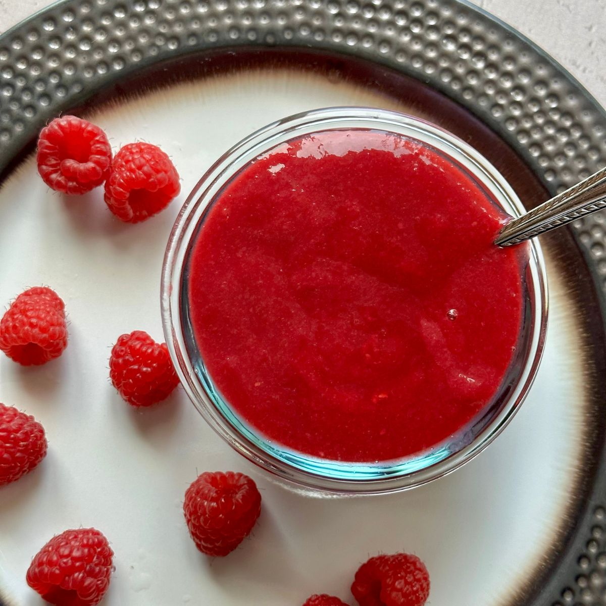
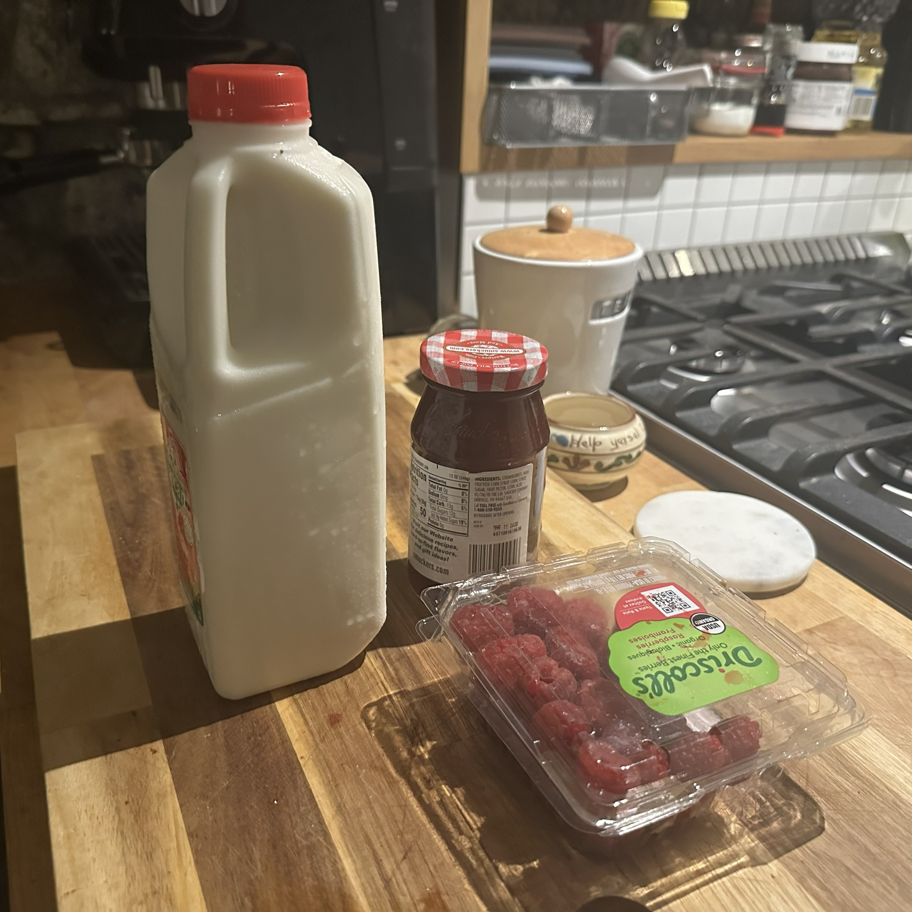
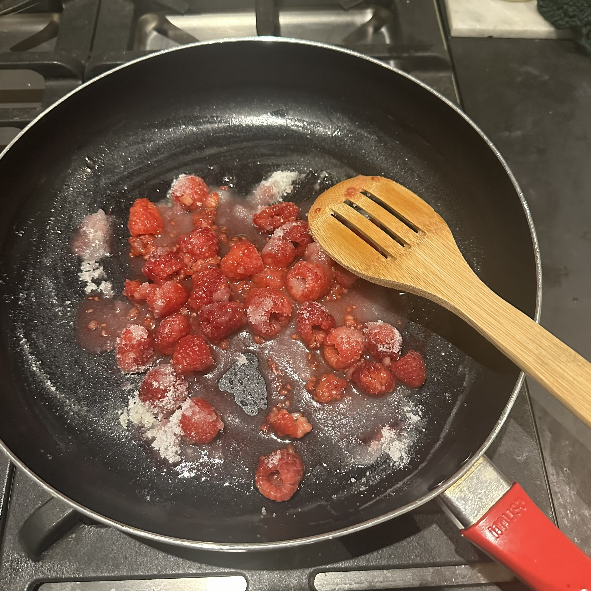
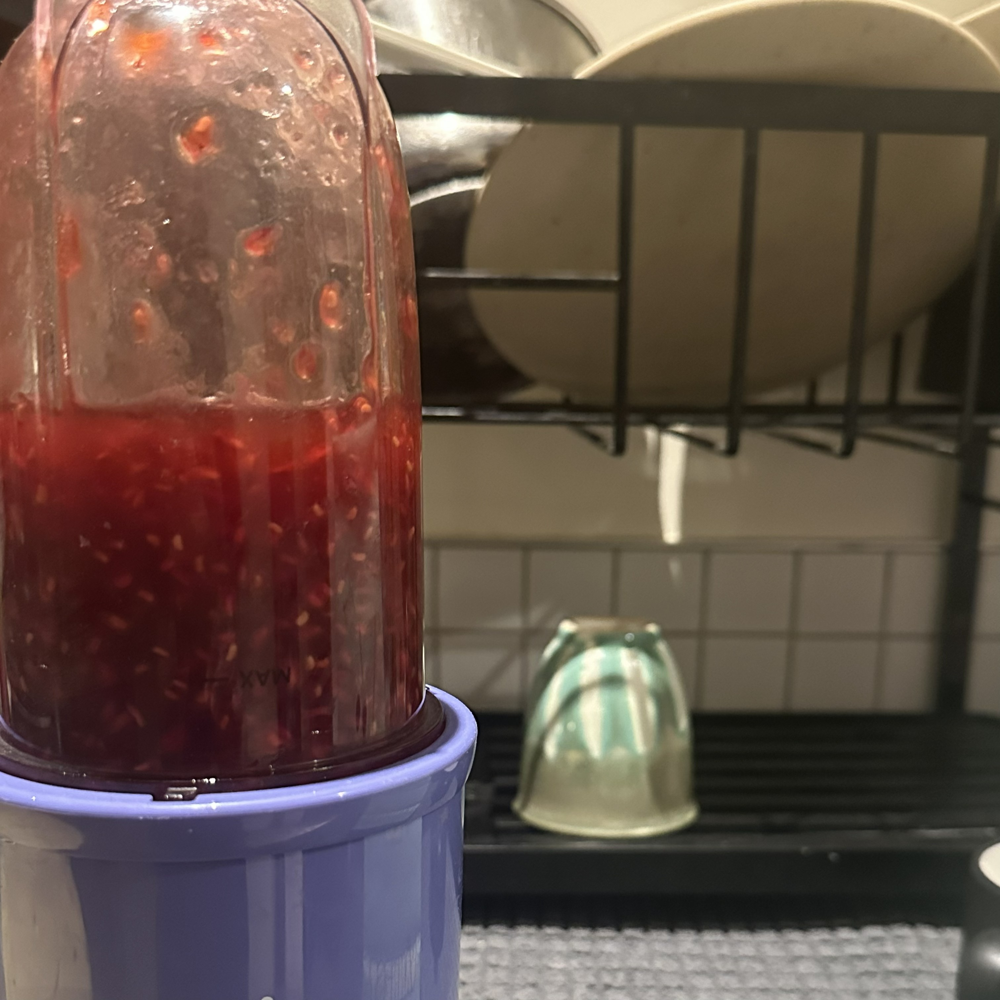
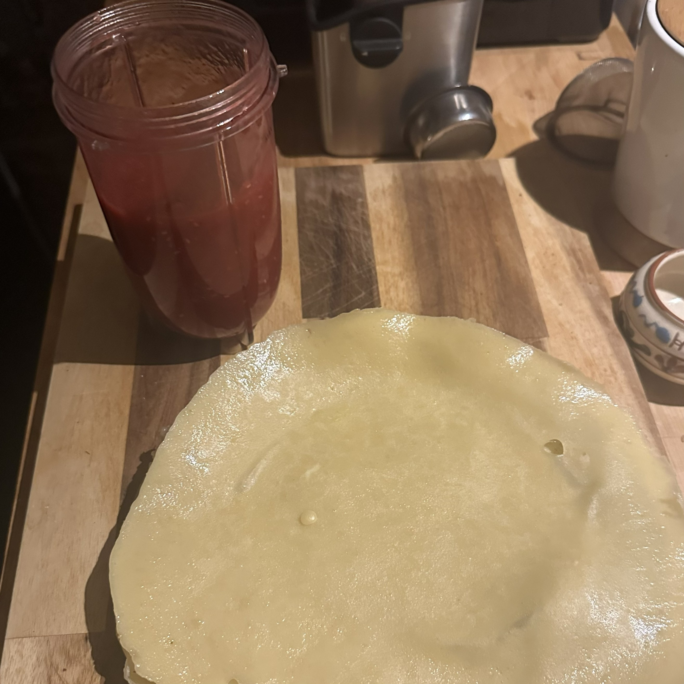
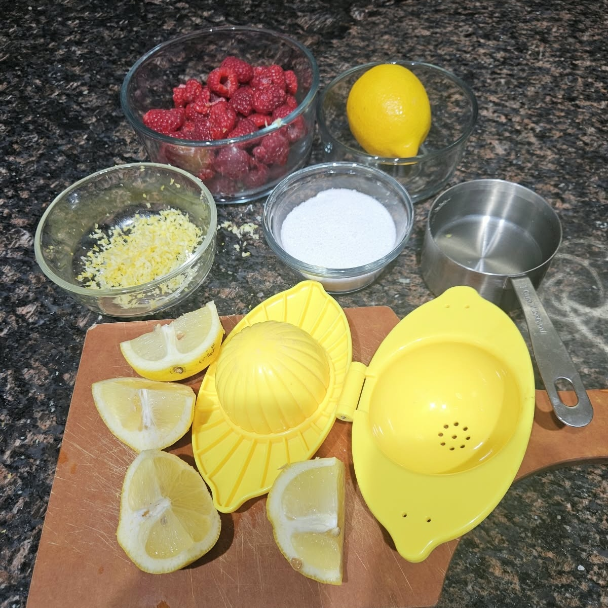
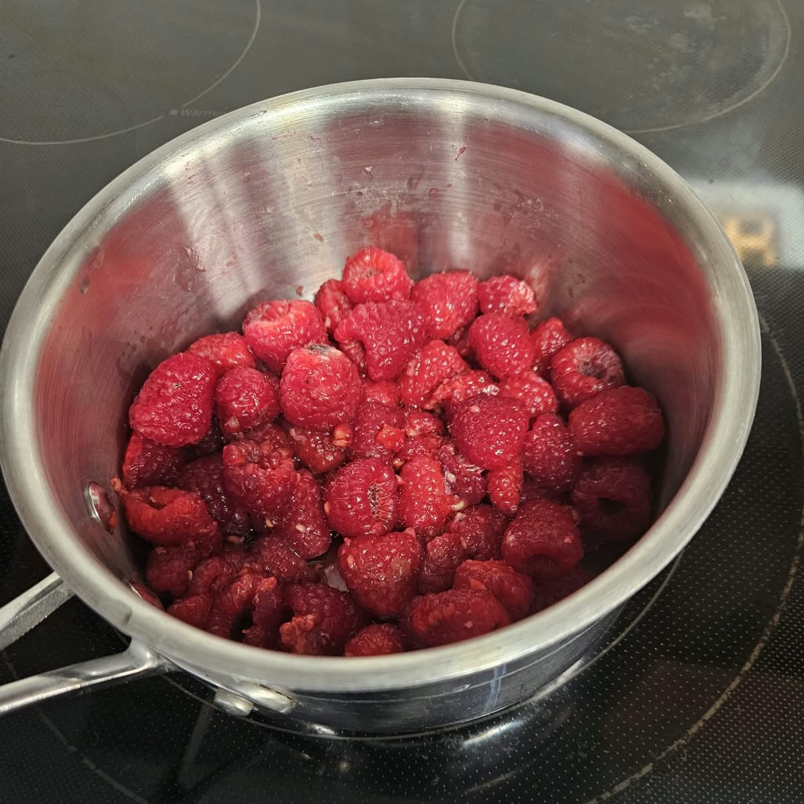
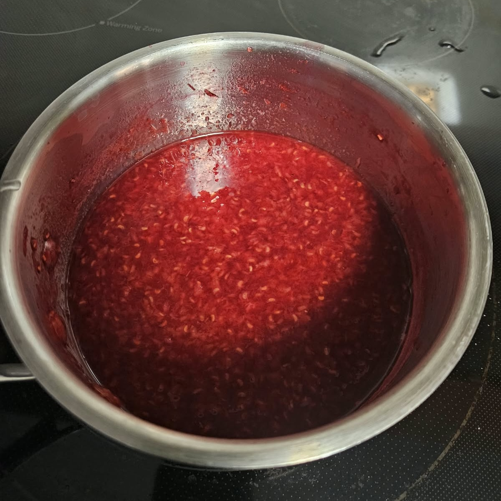
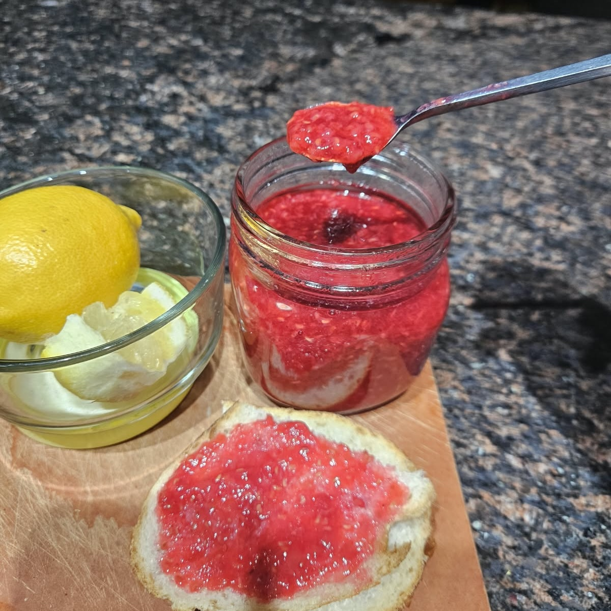

Ingredients
1 (6-ounce) package fresh raspberries
½ cup sugar
1 cup (12 ounces) seedless raspberry jam, such as Tiptree
Place the raspberries, sugar, and ¼ cup water in a small saucepan over medium heat. Bring to a boil, lower the heat, and simmer for 4 minutes. Pour the cooked raspberries and the jam into the bowl of a food processor fitted with the steel blade and process until smooth. If you do not have a food processor, use a blender. Pour into a container and chill. The sauce can be refrigerated for up to one week.
This is meant to be eaten with something else. This is recipe is also easy to alter. Try your own twist on it!
Gather Ingredients

Let it simmer in a pan

Blend!

Eat with your preferred choice of food! This person chose to make crepes.

Gather ingredients, this one adds lemon zest.

Let it simmer in a pot.

Mix until the mixture becomes liquid!

Eat with your preferred choice of food! This person chose to put it on bread.
